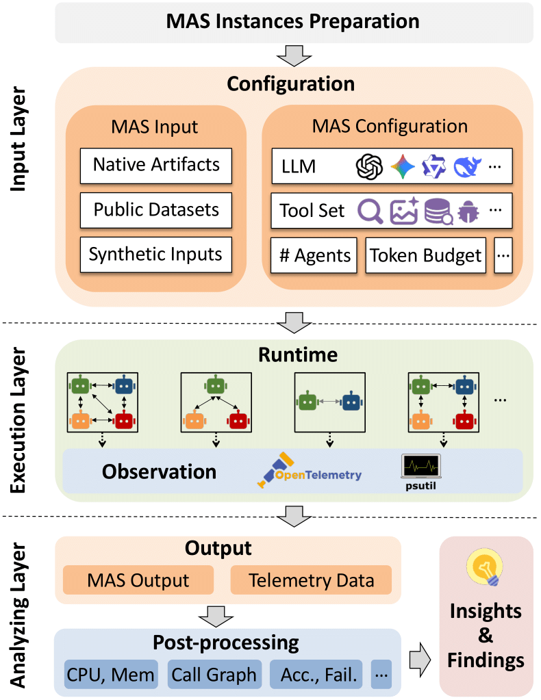

Abstract
MAESTRO is a unified evaluation suite for multi-agent systems. It helps researchers and practitioners test how different backend LLMs and agent architectures affect reliability, cost, latency, and overall task quality under reproducible settings. By standardizing telemetry collection and analysis, MAESTRO makes it easier to compare systems fairly, diagnose failure modes, and understand where performance gains are real versus unstable across tasks.
How MAESTRO Works
MAESTRO evaluates multi-agent systems with a reproducible pipeline from trace collection to paper-grade analysis plots. It aligns runs across models and agent architectures so cost, duration, and accuracy can be compared consistently.
The architecture below summarizes this flow: collect telemetry, normalize into a shared schema, compute comparable metrics, and publish interpretable visual outputs.


Placeholder slot for benchmark visual.

Placeholder slot for benchmark visual.

Placeholder slot for telemetry result visual.

Placeholder slot for telemetry result visual.
Another Carousel
Changing the Backend LLM Increases Cost, with Mixed Performance Gains
As model capability increases, budget cost usually increases as well, but task duration does not always decrease. Weaker models can have lower token prices, yet often require more rounds to finish a task. For accuracy, stronger models tend to improve results overall, but gains still show high variance: depending on query type and agent architecture, gains can shrink or even turn negative.
Reference Plots
Tradeoff Scorecard (Overview)
Accuracy by Architecture
Consistency by Architecture
Tavily Shift (Latency vs Cost)
BibTeX
@misc{maestro,
title={MAESTRO: Multi-Agent Evaluation Suite for Testing, Reliability, and Observability},
author={Tie Ma and Yixi Chen and Vaastav Anand and Alessandro Cornacchia and Amândio R. Faustino and Guanheng Liu and Shan Zhang and Hongbin Luo and Suhaib A. Fahmy and Zafar A. Qazi and Marco Canini},
year={2026},
eprint={2601.00481},
archivePrefix={arXiv},
primaryClass={cs.NI},
url={https://arxiv.org/abs/2601.00481},
}